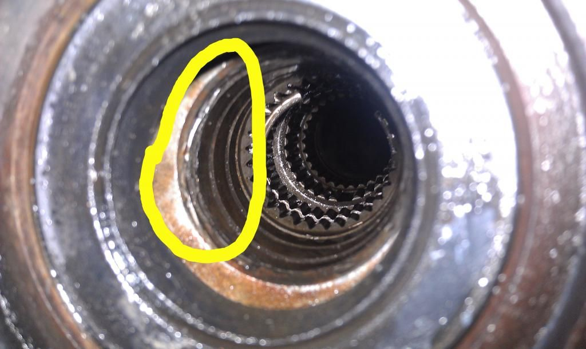
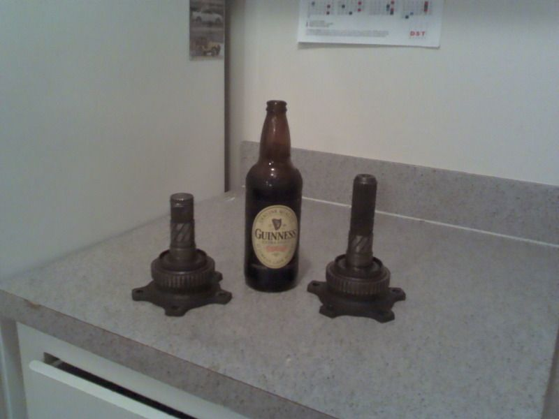

-
First off, I have searched many many hours and found no definitive answer. I put a j30 vlsd with 5-bolt axles into my 1984 turbo z31 housing and machined a groove into my axles like on xenonz31's website (http://www.xenonz31.com/vlsdInstall.html). Now I'm at a point where I can mock everything up before install.
Here is my issue. I cannot for the life of me get the damn stub axles to go into the diff. Now at this point, I'm confused as to which side the longer axles goes into. looking at the diff, the longer one should go into the passenger side, which it mostly does but it sticks out about an inch and will not go the fuck in!
Now the only thing I can think of that I could've screwed up on is the step right before part two. However, I remember specifically following this step and when I look into the diff, the splines look like they're lined up perfectly.
"**VERY IMPORTANT NOTE:**
Before you screw the diff center back together after inserting shim, take the 'longer' of the 2 stub axles and insert it through the center of the diff all the way. This splines the 2 different splined parts of the diff center together so that when you go to insert the diff stubs at the end they'll actually fit (easiest way to explain it).
Also Pour new diff oil back in before you put the backing plate on. Hopefully the gasket for it is in alright condition, just use some high temp silicone to seal it before you bolt it up so it doesn't leak everywhere.
More info on how that turned out at the end of this write-up."
So what could I be missing? I was really hoping to mock everything up.
Also, I am having an issue installing the v2 diff mount I bought forever ago. The 4 holes in the housing that mount to the body… The holes don't seem large enough to fit over the stud from the car. I was just going to enlarge the hole, but wanted to see if other had this issue.
Thanks in advance!! -
Have you tried the obvious, swapping axle stubs around? have you tried wiggling/rotating it in further? -
Of course, i have tried both those things. I'm simply stumped… -
update
I know its really hard to see, but this is the result of me trying to force the axle in(long stub on passenger side). I can get the short axle to go in on the driver's side, but the passenger side is a bitch. I'm thinking the carrier is somehow out of alignment. What do you guys think?
 -
Is the spline count the same?
1988 300ZX Turbo, Shiro Special #760
1988 300ZX Turbo Automatic (wife's car)
1991 Hard-body 2WD
http://zccw.org/zccw/?page_id=1215 -
What kind of axles are you sticking into it? Which hybrid axle method are you using? -
They are the j30 axles that were in the diff when I pulled it off the car.
I'll get back with you guys on the method. I forget which one I used and I'm tired. -
I shaved 5/16 off the stub and had a new c clip groove cut. Can't understand your issue.

 Cha iro
Cha iro
enjoy building it yourself.
if it fails, fuck it.
at least you gave it a whirl. -
I cant understand it either. I was using Method 5. Car is an 84 turbo model, so I used 5-bolt BDO type axles. I had the grooves machined into my axles and flipped the cages. No alterations to the axle stubs.
Augustus, why did you have to machine that axle? Also Augustus, my longer stub looks a little different from yours. I'll have to get a pick and post it up.
I might just pull everything apart, reset the splines and re-torque everything. Wish me luck. -
Mine was from a Z32NA.
The Z31 crown is 5/16 thicker than the Z32NA's, so when the Z31 crown is bolted to the Z32 VLSD pumpkin, the assembly is moved 5/16 to left side of the diff housing. The shims are left in the same location but the spacer is now swapped to the right side of the diff housing. So the left axle stub, the one with the clip is unseated 5/16 and must be modified to sit flush with the diff housing as it should.Cha iro
enjoy building it yourself.
if it fails, fuck it.
at least you gave it a whirl. -
Seems pretty weird since you're using the stubs that came with the center. Have you tried to pull the VLSD center out and stick the stubs into it without it being in the pumpkin? -
Alright guys, quick update. I want to thank everyone for trying to help. The problem was simple and I was too stubborn to admit it. The splines were simply out of alignment. Took a couple tries, but I got it. Hopefully it doesn't throw the carrier off from me removing it a couple times.
Lastly, I think everyone missed my second question. I am having an issue installing the v2 diff mount I bought forever ago. The 4 holes in the housing that mount to the body… The holes don't seem large enough to fit over the stud from the car. I was just going to enlarge the hole, but wanted to see if others had this issue.
Thanks again everyone. -
Glad it worked out!
Question about your V2 diff mount: is it the updated style with the steel square tube and the poly inside of it or is it the really early versions that was the angle aluminum with the poly part bolted to it? -
Nah, its the boxed steel version with the poly inside.

Copyright © 2006–. All rights reserved. Privacy Policy